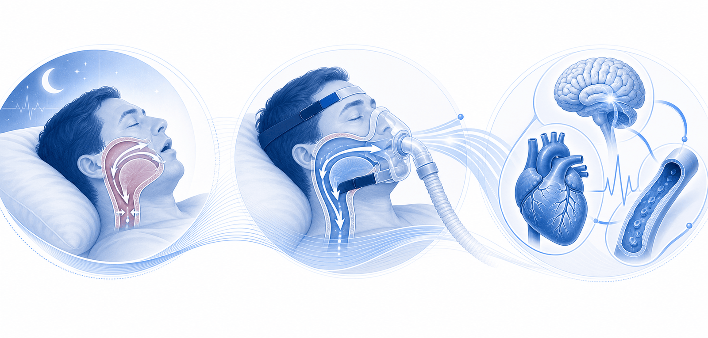
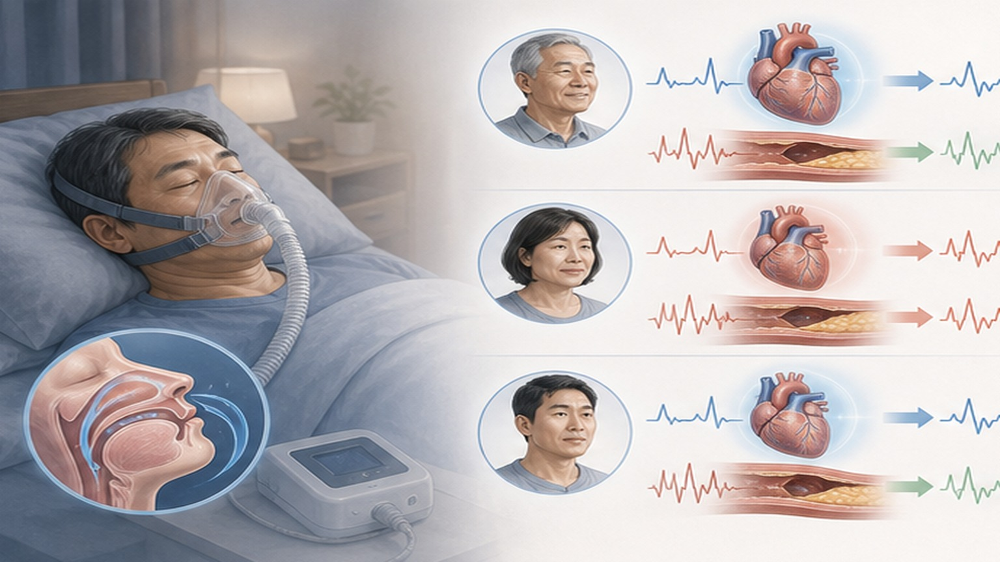
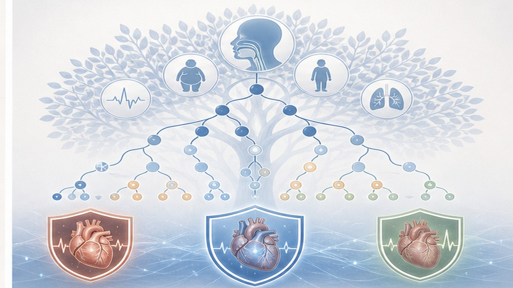
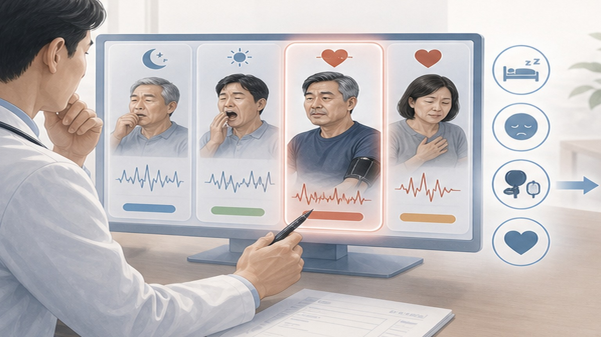

CPAP의 개인 맞춤 심혈관 효과,
평균 null 뒤에 숨은 BIG winners·losers
Communications Medicine 2026.04 — Mount Sinai 팀이 SAVE trial(N=2,687)을 causal survival forest로 재분석. 일부 환자는 사건 크게 감소, 일부는 오히려 증가. RCT 평균치(null)가 진짜 효과 가렸다.
한 문단·세 숫자로 요약
평균값은 효과 없음(null) — 실제로는 환자별로 극단적 이질성. 누가 도움 받는지 식별 가능한 시대.
(원 RCT 평균 HR 1.10, p=0.34, null)
CPAP로 CV 사건 크게 감소한 하위군
증가 추정군 (졸음 없음·경증)
왜 SAVE trial은 null이었나 — 평균의 함정
OSA는 심혈관 위험 인자로 확립, 그러나 CPAP RCT 결과는 일관되게 null. "평균 환자"에 답이 없을 수 있다.

SAVE trial(2016) 핵심
- 대상 — 중등도-중증 OSA (AHI ≥12) + 기존 CV 질환 (관상동맥·뇌혈관)
- 설계 — 다국 RCT, N=2,687, CPAP + usual care vs usual care
- 1차 결과 — 복합 CV 사건 (심혈관 사망·심근경색·뇌졸중·심부전 입원·TIA)
- 평균 추적 — 3.7년, CPAP 평균 사용 3.3시간/밤
- 결과 — HR 1.10 (95% CI 0.91–1.32), p=0.34, null
- 충격 — OSA-CV 기전 강력함에도 효과 없음 → 가이드 후퇴
Causal Survival Forest — SAVE 재분석 8 step
평균 효과(ATE)가 아닌 환자별 효과(CATE)를 추정. 무작위배정 보존 + 기계학습 비선형 상호작용 포착.
Heterogeneous Treatment Effect — CPAP 효과 분포
환자별 추정 CATE를 5분위 분포로. 평균은 null인데 양 끝이 극단적으로 엇갈린다.
사건 큰 감소
중간 감소
효과 없음
약간 증가
사건 증가 추정

누가 CPAP로 큰 이득 — 4가지 핵심 인자
SHAP 분석 결과. 단일 인자 X — 다중 인자 조합이 효과를 강하게 예측한다.
😴 주간 졸음 (ESS ≥11)
Epworth Sleepiness Scale 11점 이상. SAVE는 졸음 환자 사전 제외했음에도 잔존 졸음 군에서 CPAP 효과 가장 큼. 일관된 최강 예측 인자. 졸음 = OSA 임상적 표현 + 순응도 ↑.
🌬️ 중증 AHI (≥30/h)
Apnea-Hypopnea Index 시간당 30회 이상 = 중증. 간헐적 저산소 부담 큼. CPAP의 산소포화도 개선 효과 큼 → CV 사건 감소 폭 큼. AHI 12-30 경증·중등도는 효과 변동성 큼.
❤️ 고 CV 위험 부담
SBP 高·LDL 高·관상동맥질환·다발성 위험인자. 절대 위험 큰 환자가 절대 이득도 큼. 저위험군은 base rate 낮아 CPAP 효과 보기 어려움.
🩺 당뇨 (T2DM)
당뇨 동반자에서 CPAP 효과 더 큼. 인슐린 저항성·교감신경 항진·미세혈관 손상이 OSA와 시너지. CPAP로 야간 저산소 차단 → 대사·CV 모두 개선 가능성.
Causal Survival Forest — 작동 원리와 한계
랜덤포레스트의 인과 추론 확장. 환자별 효과 추정 + 인과성 보존. 단 RCT 데이터 + 충분한 표본이 전제.
⚙️ 어떻게 환자별 효과를 추정하나
- ① 무작위배정 보존 — RCT 자료라 confounding 자동 통제. observational 데이터의 한계 회피
- ② 결정나무 + 인과 분할 — 효과 차이를 가장 잘 가르는 변수로 환자를 가지(branch)로 나눔
- ③ 수백 트리 앙상블 — 트리마다 다른 부트스트랩·feature subset → 안정적 평균 추정
- ④ Survival 통합 — censoring·시간-사건 데이터 정확 처리. Kaplan-Meier 확장
- ⑤ CATE 출력 — 환자 i의 추정 효과 τ̂(xᵢ) = 신뢰구간 포함

위험군별 추정 효과 — 6 cluster spectrum
실무 가이드로 변환. "어떤 환자에 CPAP 추천 강도가 더 강한가" — 일률 적용 X.
졸음 + 중증 AHI + 당뇨
3중 위험 동반. CATE 추정 HR ≈ 0.5. 강력 권고 — CPAP 적극 의뢰·순응도 관리 핵심.
중증 AHI + 고 CV 위험
AHI ≥30 + 다발성 CV 위험인자. CATE HR ≈ 0.6. 강력 권고. 야간 저산소 부담 큼.
졸음 + 중등도 AHI
증상 동반자. CATE HR ≈ 0.75. 권고. 졸음 개선 + CV 위험 감소 이중 이득.
비졸음 + 경증 AHI
AHI 12-20 + ESS <11. CATE HR ≈ 1.0. 개별 risk-benefit 평가. 순응도 부담 vs 효과 비교.
고령 + 뇌혈관 우선 + 비졸음
75세+·뇌졸중·비졸음. CATE HR ≈ 1.2. 신중 평가 — 야간 압력·불편이 사건 유발 가능성.
저 CV 위험 + 경증 AHI + 비순응 가능
치료 부담이 이득 초과. CATE HR ≈ 1.4. 일반 권고 X — 적극적 생활습관·체중 우선.
1차 진료 의뢰 기준 — 우선순위 변환
OSA 의심 + CPAP 적극 권고 + 다학제 의뢰. 본 논문 결과를 실무 트리아지로.
🔍 OSA 의심 — 수면다원검사 의뢰
- 관찰된 무호흡 — 배우자·가족이 호흡 멈춤·심한 코골이 보고
- 주간 졸음 ESS ≥11 — Epworth 설문 11점 이상, 운전 중 졸음·집중력 ↓
- 저산소 표지자 — 아침 두통·기상 시 입마름·야간뇨·기상 시 피로
- 고위험 표현형 — 비만 BMI ≥30·짧은 목둘레·턱 후퇴·편도 비대
- 난치성 고혈압 — 3제 이상 약물에도 미조절. OSA 동반 흔함
- CV 사건 후 — 심근경색·뇌졸중·심방세동·심부전 진단 직후 평가
💨 CPAP 우선 권고군 (본 논문 결과)
- ① 졸음 동반 환자 — ESS ≥11 무조건 권고. 증상 개선 + CV 이중 이득
- ② 중증 AHI (≥30) — 저산소 부담 큼. CV·대사 이득 큼
- ③ 다발 CV 위험인자 — HTN·DM·이상지질·관상동맥질환
- ④ 당뇨 동반 — 인슐린 저항성·CV 시너지. 적극 권고
- ⑤ 직업적 안전 위험 — 운전·기계 조작 직군 (졸음 = 사고 위험)
- ⑥ 동반 폐고혈압·심방세동 — 야간 저산소 차단으로 진행 억제

진료실 실무 4단계 — 진단부터 추적까지
스크리닝 → 수면다원검사 → CPAP 시작 → 순응도·CV 추적. 6개월 시점 risk-benefit 재평가.
STOP-BANG·Epworth·BMI·목둘레·CV 위험 (HTN·DM·CAD·CVD·AF). 의심 시 수면다원검사 의뢰.
1박 PSG 또는 가정형 검사. AHI·산소포화도·중증도. 환자 표현형(졸음·중증·고위험)으로 CPAP 강도 결정.
호흡기내과 의뢰 → 적정 압력 설정. 마스크 fit 교육. 첫 4주 순응도 점검 (≥4시간/밤·≥70% 야간 목표).
혈압·HbA1c·체중·ESS 추적. 순응도 부족 + 효과 미미 시 risk-benefit 재평가. 대안: 체중감량·자세·구강내장치.
한계 + 한국 진료 context
SAVE 모집단·기계학습 가설 단계·한국 보험 체계·아시아인 외삽 한계 — 균형 잡힌 적용 필요.
1차 진료 Take-home — 4가지 핵심
평균 null 뒤에 숨은 환자별 효과 — AI 기반 개인화 진료가 진료실에 도착했다